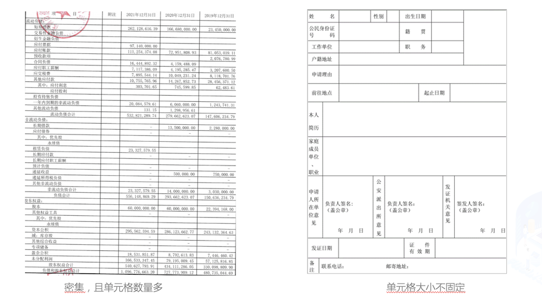

智能运营：通用中文表格识别
1. 背景介绍
中文表格识别在金融行业有着广泛的应用，如保险理赔、财报分析和信息录入等领域。当前，金融行业的表格识别主要以手动录入为主，开发一种自动表格识别成为丞待解决的问题。

在金融行业中，表格图像主要有清单类的单元格密集型表格，申请表类的大单元格表格，拍照表格和倾斜表格四种主要形式。


当前的表格识别算法不能很好的处理这些场景下的表格图像。在本例中，我们使用PP-StructureV2最新发布的表格识别模型SLANet来演示如何进行中文表格是识别。同时，为了方便作业流程，我们使用表格属性识别模型对表格图像的属性进行识别，对表格的难易程度进行判断，加快人工进行校对速度。
本项目AI Studio链接：https://aistudio.baidu.com/aistudio/projectdetail/4588067
2. 中文表格识别
2.1 环境准备
| # 下载PaddleOCR代码
! git clone -b dygraph https://gitee.com/paddlepaddle/PaddleOCR
|
| # 安装PaddleOCR环境
! pip install -r PaddleOCR/requirements.txt --force-reinstall
! pip install protobuf==3.19
|
2.2 准备数据集
本例中使用的数据集采用表格生成工具制作。
使用如下命令对数据集进行解压，并查看数据集大小
| ! cd data/data165849 && tar -xf table_gen_dataset.tar && cd -
! wc -l data/data165849/table_gen_dataset/gt.txt
|
2.2.1 划分训练测试集
使用下述命令将数据集划分为训练集和测试集, 这里将90%划分为训练集，10%划分为测试集
| import random
with open('/home/aistudio/data/data165849/table_gen_dataset/gt.txt') as f:
lines = f.readlines()
random.shuffle(lines)
train_len = int(len(lines)*0.9)
train_list = lines[:train_len]
val_list = lines[train_len:]
# 保存结果
with open('/home/aistudio/train.txt','w',encoding='utf-8') as f:
f.writelines(train_list)
with open('/home/aistudio/val.txt','w',encoding='utf-8') as f:
f.writelines(val_list)
|
划分完成后，数据集信息如下
| 类型 |
数量 |
图片地址 |
标注文件路径 |
| 训练集 |
18000 |
/home/aistudio/data/data165849/table_gen_dataset |
/home/aistudio/train.txt |
| 测试集 |
2000 |
/home/aistudio/data/data165849/table_gen_dataset |
/home/aistudio/val.txt |
2.2.2 查看数据集
| import cv2
import os, json
import numpy as np
from matplotlib import pyplot as plt
%matplotlib inline
def parse_line(data_dir, line):
data_line = line.strip("\n")
info = json.loads(data_line)
file_name = info['filename']
cells = info['html']['cells'].copy()
structure = info['html']['structure']['tokens'].copy()
img_path = os.path.join(data_dir, file_name)
if not os.path.exists(img_path):
print(img_path)
return None
data = {
'img_path': img_path,
'cells': cells,
'structure': structure,
'file_name': file_name
}
return data
def draw_bbox(img_path, points, color=(255, 0, 0), thickness=2):
if isinstance(img_path, str):
img_path = cv2.imread(img_path)
img_path = img_path.copy()
for point in points:
cv2.polylines(img_path, [point.astype(int)], True, color, thickness)
return img_path
def rebuild_html(data):
html_code = data['structure']
cells = data['cells']
to_insert = [i for i, tag in enumerate(html_code) if tag in ('<td>', '>')]
for i, cell in zip(to_insert[::-1], cells[::-1]):
if cell['tokens']:
text = ''.join(cell['tokens'])
# skip empty text
sp_char_list = ['<b>', '</b>', '\u2028', ' ', '<i>', '</i>']
text_remove_style = skip_char(text, sp_char_list)
if len(text_remove_style) == 0:
continue
html_code.insert(i + 1, text)
html_code = ''.join(html_code)
return html_code
def skip_char(text, sp_char_list):
"""
skip empty cell
@param text: text in cell
@param sp_char_list: style char and special code
@return:
"""
for sp_char in sp_char_list:
text = text.replace(sp_char, '')
return text
save_dir = '/home/aistudio/vis'
os.makedirs(save_dir, exist_ok=True)
image_dir = '/home/aistudio/data/data165849/'
html_str = '<table border="1">'
# 解析标注信息并还原html表格
data = parse_line(image_dir, val_list[0])
img = cv2.imread(data['img_path'])
img_name = ''.join(os.path.basename(data['file_name']).split('.')[:-1])
img_save_name = os.path.join(save_dir, img_name)
boxes = [np.array(x['bbox']) for x in data['cells']]
show_img = draw_bbox(data['img_path'], boxes)
cv2.imwrite(img_save_name + '_show.jpg', show_img)
html = rebuild_html(data)
html_str += html
html_str += '</table>'
# 显示标注的html字符串
from IPython.core.display import display, HTML
display(HTML(html_str))
# 显示单元格坐标
plt.figure(figsize=(15,15))
plt.imshow(show_img)
plt.show()
|
2.3 训练
这里选用PP-StructureV2中的表格识别模型SLANet
SLANet是PP-StructureV2全新推出的表格识别模型，相比PP-StructureV1中TableRec-RARE，在速度不变的情况下精度提升4.7%。TEDS提升2%
进行训练之前先使用如下命令下载预训练模型
| # 进入PaddleOCR工作目录
os.chdir('/home/aistudio/PaddleOCR')
# 下载英文预训练模型
! wget -nc -P ./pretrain_models/ https://paddleocr.bj.bcebos.com/ppstructure/models/slanet/en_ppstructure_mobile_v2.0_SLANet_train.tar --no-check-certificate
! cd ./pretrain_models/ && tar xf en_ppstructure_mobile_v2.0_SLANet_train.tar && cd ../
|
使用如下命令即可启动训练，需要修改的配置有
| 字段 |
修改值 |
含义 |
| Global.pretrained_model |
./pretrain_models/en_ppstructure_mobile_v2.0_SLANet_train/best_accuracy.pdparams |
指向英文表格预训练模型地址 |
| Global.eval_batch_step |
562 |
模型多少step评估一次，一般设置为一个epoch总的step数 |
| Optimizer.lr.name |
Const |
学习率衰减器 |
| Optimizer.lr.learning_rate |
0.0005 |
学习率设为之前的0.05倍 |
| Train.dataset.data_dir |
/home/aistudio/data/data165849 |
指向训练集图片存放目录 |
| Train.dataset.label_file_list |
/home/aistudio/data/data165849/table_gen_dataset/train.txt |
指向训练集标注文件 |
| Train.loader.batch_size_per_card |
32 |
训练时每张卡的batch_size |
| Train.loader.num_workers |
1 |
训练集多进程数据读取的进程数，在aistudio中需要设为1 |
| Eval.dataset.data_dir |
/home/aistudio/data/data165849 |
指向测试集图片存放目录 |
| Eval.dataset.label_file_list |
/home/aistudio/data/data165849/table_gen_dataset/val.txt |
指向测试集标注文件 |
| Eval.loader.batch_size_per_card |
32 |
测试时每张卡的batch_size |
| Eval.loader.num_workers |
1 |
测试集多进程数据读取的进程数，在aistudio中需要设为1 |
已经修改好的配置存储在 /home/aistudio/SLANet_ch.yml
| import os
os.chdir('/home/aistudio/PaddleOCR')
! python3 tools/train.py -c /home/aistudio/SLANet_ch.yml
|
大约在7个epoch后达到最高精度 97.49%
2.4 验证
训练完成后，可使用如下命令在测试集上评估最优模型的精度
| ! python3 tools/eval.py -c /home/aistudio/SLANet_ch.yml -o Global.checkpoints=/home/aistudio/PaddleOCR/output/SLANet_ch/best_accuracy.pdparams
|
2.5 训练引擎推理
使用如下命令可使用训练引擎对单张图片进行推理
| import os;os.chdir('/home/aistudio/PaddleOCR')
! python3 tools/infer_table.py -c /home/aistudio/SLANet_ch.yml -o Global.checkpoints=/home/aistudio/PaddleOCR/output/SLANet_ch/best_accuracy.pdparams Global.infer_img=/home/aistudio/data/data165849/table_gen_dataset/img/no_border_18298_G7XZH93DDCMATGJQ8RW2.jpg
|
| import cv2
from matplotlib import pyplot as plt
%matplotlib inline
# 显示原图
show_img = cv2.imread('/home/aistudio/data/data165849/table_gen_dataset/img/no_border_18298_G7XZH93DDCMATGJQ8RW2.jpg')
plt.figure(figsize=(15,15))
plt.imshow(show_img)
plt.show()
# 显示预测的单元格
show_img = cv2.imread('/home/aistudio/PaddleOCR/output/infer/no_border_18298_G7XZH93DDCMATGJQ8RW2.jpg')
plt.figure(figsize=(15,15))
plt.imshow(show_img)
plt.show()
|
2.6 模型导出
使用如下命令可将模型导出为inference模型
| ! python3 tools/export_model.py -c /home/aistudio/SLANet_ch.yml -o Global.checkpoints=/home/aistudio/PaddleOCR/output/SLANet_ch/best_accuracy.pdparams Global.save_inference_dir=/home/aistudio/SLANet_ch/infer
|
2.7 预测引擎推理
使用如下命令可使用预测引擎对单张图片进行推理
| os.chdir('/home/aistudio/PaddleOCR/ppstructure')
! python3 table/predict_structure.py \
--table_model_dir=/home/aistudio/SLANet_ch/infer \
--table_char_dict_path=../ppocr/utils/dict/table_structure_dict.txt \
--image_dir=/home/aistudio/data/data165849/table_gen_dataset/img/no_border_18298_G7XZH93DDCMATGJQ8RW2.jpg \
--output=../output/inference
|
| # 显示原图
show_img = cv2.imread('/home/aistudio/data/data165849/table_gen_dataset/img/no_border_18298_G7XZH93DDCMATGJQ8RW2.jpg')
plt.figure(figsize=(15,15))
plt.imshow(show_img)
plt.show()
# 显示预测的单元格
show_img = cv2.imread('/home/aistudio/PaddleOCR/output/inference/no_border_18298_G7XZH93DDCMATGJQ8RW2.jpg')
plt.figure(figsize=(15,15))
plt.imshow(show_img)
plt.show()
|
2.8 表格识别
在表格结构模型训练完成后，可结合OCR检测识别模型，对表格内容进行识别。
首先下载PP-OCRv3文字检测识别模型
| # 下载PP-OCRv3文本检测识别模型并解压
! wget -nc -P ./inference/ https://paddleocr.bj.bcebos.com/PP-OCRv3/chinese/ch_PP-OCRv3_det_slim_infer.tar --no-check-certificate
! wget -nc -P ./inference/ https://paddleocr.bj.bcebos.com/PP-OCRv3/chinese/ch_PP-OCRv3_rec_slim_infer.tar --no-check-certificate
! cd ./inference/ && tar xf ch_PP-OCRv3_det_slim_infer.tar && tar xf ch_PP-OCRv3_rec_slim_infer.tar && cd ../
|
模型下载完成后，使用如下命令进行表格识别
| import os;os.chdir('/home/aistudio/PaddleOCR/ppstructure')
! python3 table/predict_table.py \
--det_model_dir=inference/ch_PP-OCRv3_det_slim_infer \
--rec_model_dir=inference/ch_PP-OCRv3_rec_slim_infer \
--table_model_dir=/home/aistudio/SLANet_ch/infer \
--rec_char_dict_path=../ppocr/utils/ppocr_keys_v1.txt \
--table_char_dict_path=../ppocr/utils/dict/table_structure_dict.txt \
--image_dir=/home/aistudio/data/data165849/table_gen_dataset/img/no_border_18298_G7XZH93DDCMATGJQ8RW2.jpg \
--output=../output/table
|
| # 显示原图
show_img = cv2.imread('/home/aistudio/data/data165849/table_gen_dataset/img/no_border_18298_G7XZH93DDCMATGJQ8RW2.jpg')
plt.figure(figsize=(15,15))
plt.imshow(show_img)
plt.show()
# 显示预测结果
from IPython.core.display import display, HTML
display(HTML('<html><body><table><tr><td colspan="5">alleadersh</td><td rowspan="2">不贰过，推</td><td rowspan="2">从自己参与浙江数</td><td rowspan="2">。另一方</td></tr><tr><td>AnSha</td><td>自己越</td><td>共商共建工作协商</td><td>w.east </td><td>抓好改革试点任务</td></tr><tr><td>Edime</td><td>ImisesElec</td><td>怀天下”。</td><td></td><td>22.26 </td><td>31.61</td><td>4.30 </td><td>794.94</td></tr><tr><td rowspan="2">ip</td><td> Profundi</td><td>：2019年12月1</td><td>Horspro</td><td>444.48</td><td>2.41 </td><td>87</td><td>679.98</td></tr><tr><td> iehaiTrain</td><td>组长蒋蕊</td><td>Toafterdec</td><td>203.43</td><td>23.54 </td><td>4</td><td>4266.62</td></tr><tr><td>Tyint </td><td> roudlyRol</td><td>谢您的好意，我知道</td><td>ErChows</td><td></td><td>48.90</td><td>1031</td><td>6</td></tr><tr><td>NaFlint</td><td></td><td>一辈的</td><td>aterreclam</td><td>7823.86</td><td>9829.23</td><td>7.96 </td><td> 3068</td></tr><tr><td>家上下游企业，5</td><td>Tr</td><td>景象。当地球上的我们</td><td>Urelaw</td><td>799.62</td><td>354.96</td><td>12.98</td><td>33 </td></tr><tr><td>赛事（</td><td> uestCh</td><td>复制的业务模式并</td><td>Listicjust</td><td>9.23</td><td></td><td>92</td><td>53.22</td></tr><tr><td> Ca</td><td> Iskole</td><td>扶贫"之名引导</td><td> Papua </td><td>7191.90</td><td>1.65</td><td>3.62</td><td>48</td></tr><tr><td rowspan="2">避讳</td><td>ir</td><td>但由于</td><td>Fficeof</td><td>0.22</td><td>6.37</td><td>7.17</td><td>3397.75</td></tr><tr><td>ndaTurk</td><td>百处遗址</td><td>gMa</td><td>1288.34</td><td>2053.66</td><td>2.29</td><td>885.45</td></tr></table></body></html>'))
|
3. 表格属性识别
3.1 代码、环境、数据准备
3.1.1 代码准备
首先，我们需要准备训练表格属性的代码，PaddleClas集成了PULC方案，该方案可以快速获得一个在CPU上用时2ms的属性识别模型。PaddleClas代码可以clone下载得到。获取方式如下：
| ! git clone -b develop https://gitee.com/paddlepaddle/PaddleClas
|
3.1.2 环境准备
其次，我们需要安装训练PaddleClas相关的依赖包
| ! pip install -r PaddleClas/requirements.txt --force-reinstall
! pip install protobuf==3.20.0
|
3.1.3 数据准备
最后，准备训练数据。在这里，我们一共定义了表格的6个属性，分别是表格来源、表格数量、表格颜色、表格清晰度、表格有无干扰、表格角度。其可视化如下：

这里，我们提供了一个表格属性的demo子集，可以快速迭代体验。下载方式如下：
| %cd PaddleClas/dataset
!wget https://paddleclas.bj.bcebos.com/data/PULC/table_attribute.tar
!tar -xf table_attribute.tar
%cd ../PaddleClas/dataset
%cd ../
|
3.2 表格属性识别训练
表格属性训练整体pipelinie如下：

1.训练过程中，图片经过预处理之后，送入到骨干网络之中，骨干网络将抽取表格图片的特征，最终该特征连接输出的FC层，FC层经过Sigmoid激活函数后和真实标签做交叉熵损失函数，优化器通过对该损失函数做梯度下降来更新骨干网络的参数，经过多轮训练后，骨干网络的参数可以对为止图片做很好的预测；
2.推理过程中，图片经过预处理之后，送入到骨干网络之中，骨干网络加载学习好的权重后对该表格图片做出预测，预测的结果为一个6维向量，该向量中的每个元素反映了每个属性对应的概率值，通过对该值进一步卡阈值之后，得到最终的输出，最终的输出描述了该表格的6个属性。
当准备好相关的数据之后，可以一键启动表格属性的训练，训练代码如下：
| !python tools/train.py -c ./ppcls/configs/PULC/table_attribute/PPLCNet_x1_0.yaml -o Global.device=cpu -o Global.epochs=10
|
3.3 表格属性识别推理和部署
3.3.1 模型转换
当训练好模型之后，需要将模型转换为推理模型进行部署。转换脚本如下：
| !python tools/export_model.py -c ppcls/configs/PULC/table_attribute/PPLCNet_x1_0.yaml -o Global.pretrained_model=output/PPLCNet_x1_0/best_model
|
执行以上命令之后，会在当前目录上生成inference文件夹，该文件夹中保存了当前精度最高的推理模型。
3.3.2 模型推理
安装推理需要的paddleclas包, 此时需要通过下载安装paddleclas的develop的whl包
| !pip install https://paddleclas.bj.bcebos.com/whl/paddleclas-0.0.0-py3-none-any.whl
|
进入deploy目录下即可对模型进行推理
推理命令如下：
| !python python/predict_cls.py -c configs/PULC/table_attribute/inference_table_attribute.yaml -o Global.inference_model_dir="../inference" -o Global.infer_imgs="../dataset/table_attribute/Table_val/val_9.jpg"
!python python/predict_cls.py -c configs/PULC/table_attribute/inference_table_attribute.yaml -o Global.inference_model_dir="../inference" -o Global.infer_imgs="../dataset/table_attribute/Table_val/val_3253.jpg"
|
推理的表格图片：

预测结果如下：
| val_9.jpg: {'attributes': ['Scanned', 'Little', 'Black-and-White', 'Clear', 'Without-Obstacles', 'Horizontal'], 'output': [1, 1, 1, 1, 1, 1]}
|
推理的表格图片：

预测结果如下：
| val_3253.jpg: {'attributes': ['Photo', 'Little', 'Black-and-White', 'Blurry', 'Without-Obstacles', 'Tilted'], 'output': [0, 1, 1, 0, 1, 0]}
|
对比两张图片可以发现，第一张图片比较清晰，表格属性的结果也偏向于比较容易识别，我们可以更相信表格识别的结果，第二张图片比较模糊，且存在倾斜现象，表格识别可能存在错误，需要我们人工进一步校验。通过表格的属性识别能力，可以进一步将“人工”和“智能”很好的结合起来，为表格识别能力的落地的精度提供保障。